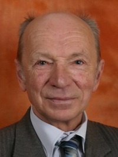

|  |
Сторож Олег Георгійович
професор, доктор фізико-математичних наук
e-mail: |
У 1966 р. став студентом механіко-математичного факультету Львівського державного університету ім. І. Франка, а в 1971 – 1974 рр. був аспірантом кафедри теорії функцій та функціонального аналізу цього ж університету.
Протягом 1974 – 1987 років працював в Інституті прикладних проблем механіки і математики АН УРСР (тепер ІППММ НАН України ім.. Я. С. Підстригача) на посаді молодшого, а згодом – старшого наукового співробітника.
|
Починаючи з лютого 1987 (і по даний час) працюю на кафедрі математичного та функціонального аналізу Львівського національного університету ім. І. Франка (до 1997 р. на посаді доцента, а потім – професора). Кандидатську дисертацію захистив у 1975 р., докторську – у 1996 р. |
ПУБЛІКАЦІЇ : |
- Сторож О. Г. Самоспряжені оператори, споріднені диференціальним // Доп. АН УРСР, сер. А.—1974. — N 2. — C. 134–137.
- Сторож О. Г. Разложение по собственным функциям конечномерных возмущений дифференциальных операторов. — Автореферат дисс. канд. физ.-мат. наук — Львов, 1974. — 22 с.
- Лянце В. Е., Сторож О. Г. Умови взаємної спряженості деяких замкнутих операторів в термінах абстрактних крайових операторів // Доп. АН УРСР, сер. А..—1980. — N6. — C. 29 — 32.
- Лянце В. Э., Сторож О. Г. Операторы, удовлетворяющие условию гладкости // Укр. мат. журнал — 1982. — 34, N 4. — С. 451–455.
- Лянце В. Э., Сторож О. Г. Методы теории неограниченных операторов. — К.: Наук. думка, 1983. — 210 с.
- Сторож О. Г. О расширениях симметрических операторов с неравными дефектными числами // Мат. заметки. — 1984. — 36, N 5. — С. 791–796.
- Сторож О. Г. Опис деяких класів розширень невід'ємного оператора // Доп. АН УРСР, сер. А..—1987. — N 10. — C. 14 — 16.
- Сторож О. Г. Условия максимальной диссипативности дифференциально-граничных операторов в пространстве вектор-функций // Дифференц. уравнения — 1988. — 24, N 2. — С. 359–361.
- Сторож О. Г. Экстремальные расширения неотрицательного оператора и аккретивные граничные задачи // Укр. мат. журнал — 1990. — 42, N 6. — С. 858–860..
- Мильо О. Я., Сторож О. Г. Про загальний вигляд максимально акретивного розширення додатно визначеного оператора // Доп. АН УРСР.—1991. — N 6. — C. 19 — 22.
- Сторож О. Г., Шувар О. Б. Замкненість, щільна визначеність та у мови самоспряженості диференціально- граничних операторів у просторі вектор-функцій // Доп. АН України. — 1993. — N 8. — С. 20 — 24.
- Сторож О. Г. Диференціально-граничний оператор другого порядку в просторі вектор-функцій, асоційований з квадратичною формою // Мат. студії. Праці Львів. мат. т-ва. — 1993. — вип. 2. — С. 59 — 63.
- Сторож О. Г., Шувар О. Б. Про один клас майже обмежених збурень гладких звужень замкненого оператора // Укр. мат. журнал — 2002. — 54, N 10. — С. 1396–1402.
- Сторож О. Г., Шувар О. Б. Умови максимальної дисипативності майже обмежених збурень гладких звужень операторів, спряжених з симетричними // Укр. мат. журнал — 2004. — 56, N 7. — С. 966 −976.
- Pipa H. M., Storozh O. G. On some perturbations changing the domain of proper extension of positively definite operator // Meth. of Funct. Analysis and Topology. — 2005. — 11, N 3. — P. 257–269.
- Піпа Г. М., Сторож О. Г. Акретивні збурення власних розширень додатно визначеного оператора // Мат. студії. −2006.- 25, N 2. — С. 183–190.
- Заболоцький М. В., Сторож О. Г., Тарасюк С. І. Математичний аналіз. — Львів: ЛНУ, 2007. — 416 (Перевидання: Заболоцький М. В., Сторож О. Г., Тарасюк С. І. Математичний аналіз: Підручник. — К.: Знання, 2008. — 421 с.)
- Сторож О. Г. Задачі з теорії міри та функціонального аналізу. — Львів, ЛНУ, 2009. — 152 с.
- Storozh O. H. Resolvent comparability of the maximal extensions of symmetric operator having arbitrary deficiency index // Journal of Math. Sciences — 2010–170, N 5. — P. 579–587.
- Качурівська Г. М., Сторож О. Г. Умови додатної визначеності збурення абстрактного аналога оператора третьої крайової задачі та відповідні варіаційні задачі // Доп. НАН України. — 2012. — N 1. — C. 11 — 17.
|
|